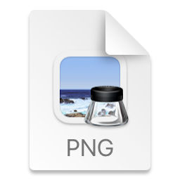

3
wheels
24
actions
$0
to use
Pack more on: switch on Everyone, Developer, QC or Video packs in Settings.
macOS 13+ · Apple silicon · free
Drag a file in Finder, tap Shift, Command or Control, and drop it on a radial wheel. Convert, annotate, compress or share it without leaving the spot.

photo.pngNo actions on this wheel accept this file.
Every file, every day
Convert. Compress. Annotate. Share.There's a faster way.
How it works
Start dragging a file in Finder.
Hold Shift, Command or Control (no Option or other modifiers) to pick a wheel. Release the key to hide it.
Drop on a segment to run it. Drop anywhere else and nothing runs.
Packs
This is the real Settings window, rebuilt. Switch actions on and off, search
them, and watch the wheel preview change. Packs add more actions from their own file, so
actions.json stays yours.
Each key, its own wheel
Pack more on: switch on Everyone, Developer, QC or Video packs in Settings.
Built-in editors
Open straight from the wheel. Nothing is overwritten.
Drag from the tail toward the arrowhead. Drag an annotation to move it.
Move marks, zoom with pinch or ⌘= / ⌘−, pan by scrolling. Saves name-annotated.ext.
Redact opens the same window with a solid block selected and saves
name-redacted.ext.
Apply writes name-crop.ext. On mp4, mov and m4v, Crop opens a video window with a frame
slider and exports with ffmpeg.
Frame a screenshot on a backdrop. Saves name-bg.ext.
Preview windows with a filmstrip for mp4, mov and m4v, exported in the background with ffmpeg. Turn on the Video pack in Settings.
Customize
Every action is one entry in ~/.config/flickwheel/actions.json.
The file is created on first launch and never overwritten.
INPUT, DIR
and NAME environment variables, never pasted into the command string, so odd file names
cannot break it./bin/zsh -lc, once per file, stopped after 120 seconds.actions.json.name 2.gif) instead
of replacing your file, and the menu bar lets you cancel a job or reveal the last results.[{
"id": "copy-path",
"label": "Copy path",
"wheel": "control",
"accepts": ["*"],
"command": "printf '%s' \"$INPUT\" | pbcopy"
}]Install
There is no download yet. FlickWheel is built from source and is ad-hoc signed, not notarized.
ffmpeg for some actions: brew install ffmpeg$ xcodegen generate
$ xcodebuild -scheme FlickWheel \
-configuration Debug buildDrag. Flick. Done.